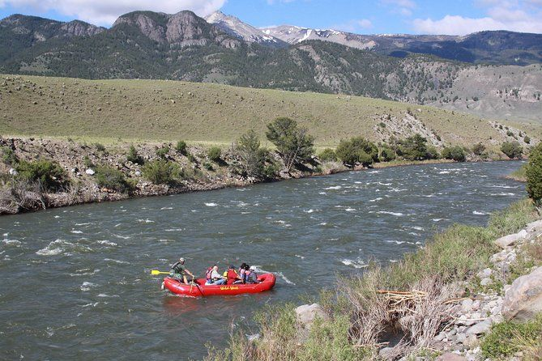
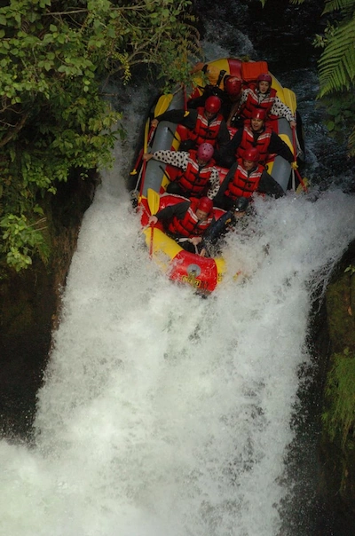
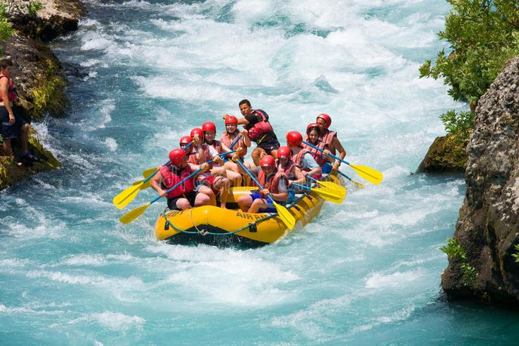
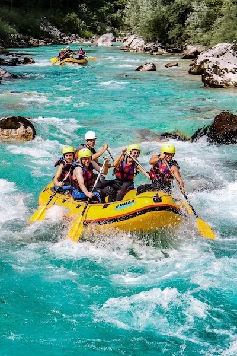

Take it easy and savor nature's beauty on our Scenic Serenity Float. This
trip is perfect for families and first-timers who just want to relax, featuring
slow-moving waters and stunning scenery. You'll drift along calm stretches of the
river, surrounded by lush forests and peaceful, open landscapes. Duration: 3 hours Difficulty: Beginner Capacity: 8 people per raft Price: Approximately $65 per person
Mystic Rapids Journey

If you're up for something a little mysterious, give our Mystic Rapids Journey a try. You'll
glide through hidden canyons
and surprise twists along the river, where challenging rapids mix with those quiet moments
that
let you really take in
nature's secrets. It's perfect for those in love with wonders of water. Duration: 3.5 hours Difficulty: Intermediate Capacity: 6 people per raft Price: Approximately $95 per person
Extreme Rapids Challenge

If you're all about that adrenaline rush, the Extreme Rapids Challenge is where you
need to be. This trip takes you headfirst into some of the wildest rapids out there.
With experienced guides leading the way, you'll get that heart-pounding excitement
while staying safe as you push your limits against nature’s raw power. Duration: 4 hours Difficulty: Expert Capacity: 4 people per raft Price: Approximately $110 per person
Rapids Rush Adventure

Imagine setting off on a wild white water rafting adventure that gets your heart
pumping. With Rapids Rush Adventure, you'll ride through fast, churning rapids where
every twist tests your teamwork and makes the ride unforgettable. It's built for those
of us who live for the adrenaline of tackling nature's toughest
waters. Duration: 4 hours Difficulty: Advanced Capacity: 4 people per raft Price: Approximately $130 per person